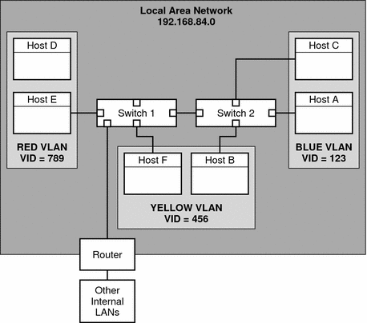
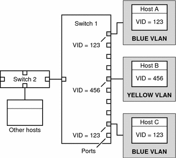

Previous
Previous
 How to Remove a Physical Interface
How to Remove a Physical Interface
Use this procedure for removing a physical interface.
On the system with the interface to be removed, assume the Primary Administrator role or become superuser.
The Primary Administrator role includes the Primary Administrator profile. To create the role and assign the role to a user, see Chapter 2, "Working With the Solaris Management Console (Tasks)," in System Administration Guide: Basic Administration.
Remove the physical interface.
# ifconfig interface unplumb down
For example, to remove the interface qfe1, you would type:
# ifconfig qfe1 unplumb down
SPARC: How to Ensure That the MAC Address of
an Interface Is Unique
Use this procedure for configuring MAC addresses.
Some applications require every interface on a host to have a unique MAC addresses. However, every SPARC based system has a system-wide MAC address, which by default is used by all interfaces. Here are two situations where you might want to configure the factory-installed MAC addresses for the interfaces on a SPARC system.
For link aggregations, you should use the factory-set MAC addresses of the interfaces in the aggregation configuration.
For IPMP groups, each interface in the group must have a unique MAC address. These interfaces must use their factory-installed MAC addresses.
The EEPROM parameter local-mac-address? determines whether all interfaces on a SPARC system use the system-wide MAC address or their unique MAC address. The next procedure shows how to use the eeprom command to check the current value of local-mac-address? and change it, if necessary.
On the system with the interfaces to be configured, assume the Primary Administrator role or become superuser.
The Primary Administrator role includes the Primary Administrator profile. To create the role and assign the role to a user, see Chapter 2, "Working With the Solaris Management Console (Tasks)," in System Administration Guide: Basic Administration.
Determine whether all interfaces on the system currently use the system-wide MAC address.
# eeprom local-mac-address? local-mac-address?=false
In the example, the response to the eeprom command, local-mac-address?=false, indicates that all interfaces do use the system-wide MAC address. The value of local-mac-address?=false must be changed to local-mac-address?=true before the interfaces can become members of an IPMP group. You should also change local-mac-address?=false to local-mac-address?=true for aggregations.
If necessary, change the value of local-mac-address? as follows:
# eeprom local-mac-address?=true
When you reboot the system, the interfaces with factory-installed MAC addresses now use these factory settings, rather than the system-wide MAC address. Interfaces without factory-set MAC addresses continue to use the system-wide MAC address.
Check the MAC addresses of all the interfaces on the system.
Look for cases where multiple interfaces have the same MAC address. In this example, all interfaces use the system-wide MAC address 8:0:20:0:0:1.
ifconfig -a lo0: flags=1000849 <UP,LOOPBACK,RUNNING,MULTICAST,IPv4> mtu 8232 index 1 inet 127.0.0.1 netmask ff000000 hme0: flags=1004843 <UP,BROADCAST,RUNNING,MULTICAST,IPv4> mtu 1500 index 2 inet 10.0.0.112 netmask ffffff80 broadcast 10.0.0.127 ether 8:0:20:0:0:1 ce0: flags=1004843 <UP,BROADCAST,RUNNING,MULTICAST,IPv4> mtu 1500 index 2 inet 10.0.0.114 netmask ffffff80 broadcast 10.0.0.127 ether 8:0:20:0:0:1 ce1: flags=1004843 <UP,BROADCAST,RUNNING,MULTICAST,IPv4> mtu 1500 index 2 inet 10.0.0.118 netmask ffffff80 broadcast 10.0.0.127 ether 8:0:20:0:0:1Note - Continue to the next step only if more than one network interface still has the same MAC address. Otherwise, go on to the final step.
If necessary, manually configure the remaining interfaces so that all interfaces have unique MAC address.
Specify a unique MAC address in the /etc/hostname.interface file for the particular interface.
# vi /etc/hostname.eri0 myhost 12:34:56:7:8:9
Note - To prevent any risk of manually configured MAC addresses conflicting with other MAC addresses on your network, you must always configure locally administered MAC addresses, as defined by the IEEE 802.3 standard.
In the example in Step 4, you would need to configure ce0 and ce1 with locally administered MAC addresses. For example, to reconfigure ce1 with the locally administered MAC address 06:05:04:03:02, you would add the following line to /etc/hostname.ce1:
ether 06:05:04:03:02
You also can use the ifconfig ether command to configure an interface's MAC address for the current session. However, any changes made directly with ifconfig are not preserved across reboots. Refer to the ifconfig(1M) man page for details.
Reboot the system.
Administering Virtual Local Area Networks
A virtual local area network (VLAN) is a subdivision of a local area network at the data link layer of the TCP/IP protocol stack. You can create VLANs for local area networks that use switch technology. By dividing groups of users into VLANs, you can improve network administration and security for the entire local network. You can also assign interfaces on the same system to different VLANs.
Consider dividing your local network into VLANs if you need to do the following:
Create a logical division of workgroups.
For example, suppose all hosts on a floor of a building are connected on one switched-based local network. You could create a separate VLAN for each workgroup on the floor.
Enforce differing security policies for the workgroups.
For example, the security needs of a Finance department and an Information Technologies department are quite different. If systems for both departments share the same local network, you could create a separate VLAN for each department. Then, you could enforce the appropriate security policy on a per-VLAN basis.
Split workgroups into manageable broadcast domains.
The use of VLANs reduces the size of broadcast domains and improves network efficiency.
Overview of VLAN Topology
Switched LAN technology enables you to organize the systems on a local network into VLANs. Before you can divide a local network into VLANs, you must obtain switches that support VLAN technology. You can configure all ports on a switch to serve a single VLAN or multiple VLANs, depending on the VLAN topology design. Each switch manufacturer has different procedures for configuring the ports of a switch.
Figure 6-1 shows a local area network that has the subnet address 192.168.84.0. This LAN is subdivided into three VLANs, Red, Yellow, and blue.
Figure 6-1 Local Area Network With Three VLANs
Connectivity on LAN 192.168.84.0 is handled by Switches 1 and 2. Systems of the Information Technologies workgroup are assigned to the Blue VLAN. The Human Resources workgroup's systems are on the Yellow VLAN. The Red VLAN contains systems in the Accounting workgroup.
VLAN Tags and Physical Points of Attachment
Each VLAN in a local area network is identified by a VLAN tag, or VLAN ID (VID). The VID is assigned during VLAN configuration. The VID is a 12-bit identifier between 1 and 4094 that provides a unique identity for each VLAN. In Figure 6-1, the Blue VLAN has the VID 123, the Yellow VLAN has the VID 456, and the Red VLAN has the VID 789.
When you configure switches to support VLANs, you need to assign a VID to each port. The VID on the port must be the same as the VID assigned to the interface that connects to the port, as shown in the following figure.
Figure 6-2 Switch Configuration for a Network with VLANs
In this figure, the primary network interfaces of three hosts connect into Switch 1. Host A is a member of the Blue VLAN. Therefore, Host A's interface is configured with the VID 123. This interface connects to Port 1 on Switch 1, which is then configured with the VID 123. Host B is a member of the Yellow VLAN, with the VID 456. Host B's interface connects to Port 5 on Switch 1, which is configured with the VID 456, and so on.
During VLAN configuration, you have to specify the physical point of attachment, or PPA, of the VLAN. You obtain the PPA value by using this formula:
driver-name + VID * 1000 + device-instance |
Note that the device-instance number must be less than 1000.
For example, you would create the following PPA for a ce1 interface to be configured as part of VLAN 456:
ce + 456 * 1000 + 1= ce456001 |